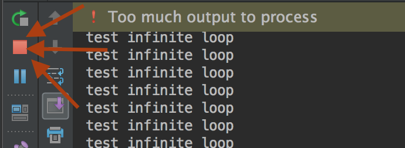

Matthieu Choplin
On one of our previous programs, we asked the user to enter a password.
PASSWORD = 'super_password123'
password_entered = input("Enter the password: ")
if password_entered == PASSWORD:
print("Access Granted")
else:
print("Forbidden")However, the user only had one chance to enter a correct password. If the password was incorrect or correct, the program would stop.
What if we want to make the user able to try more than once to enter a correct password?
while condition:
# statementWhere:
PASSWORD = 'super_password123'
password_entered = ''
while password_entered!=PASSWORD:
password_entered = input("Enter the password: ")
if password_entered == PASSWORD:
print("Access Granted")
else:
print("Forbidden")Where:
You cannot use a variable that has not been declared
PASSWORD = 'super_password123'
while password_entered!=PASSWORD:
password_entered = input("Enter the password: ")
if password_entered == PASSWORD:
print("Access Granted")
else:
print("Forbidden")Can you see why this is wrong? Try to run this program. See the error and explain what you need to correct.
You need to declare the variable password_entered before using it, else, you get:
NameError: name 'password_entered' is not defined
PASSWORD = 'super_password123'
password_entered = ''
while password_entered!=PASSWORD:
password_entered = input("Enter the password: ")
if password_entered == PASSWORD:
print("Access Granted")
else:
print("Forbidden")Conditions are expressions, they return a value that can only be True or False.
A condition that is always True, if used in a while loop, produces an infinite loop.
while True:
print('test infinite loop')| NB: to stop the infinite loop in Pycharm, click on the little red square: |  |
Make sure that the condition gets False at some point during the execution of the program
You can implement a counter, to limit the number of iterations:
counter=0
while counter < 5:
counter = counter + 1 # that you can also write counter+=1
print('test infinite loop')NB: counter = counter + 1 is equivalent to counter += 1
We say that we increment the counter at each iteration
Make a program to ask the user to guess the number that has been randomly generated.
Start from this file: GuessNumber.py (right click and save as)
import random
# Generate a random number to be guessed
number = random.randint(1, 100)
print("Guess a magic number between 0 and 100")
guess = -1
while guess != number:
guess = int(input("Enter your guess: "))
if guess == number:
print("Yes, the number is", number)
elif guess > number:
print("Your guess is too high")
else:
print("Your guess is too low")
Instead of a condition, you can also use the keyword break to end the iteration of a loop.
You can use the keyword continue to ignore the remaining code in the iteration and jump to the next iteration
Enable the use to enter some text and only quit the program if he clicks on "q" or "Q"
Hint
Hide hint
Use the break keyword.
Show solution
Hide solution
while True:
my_input = input('Type "q" or "Q" to quit: ')
if my_input.upper() == "Q":
breakThis is what you have just used in the previous exercise.
A sentinel value is a value entered by the user (with input) that will make the program stop. You can put a sentinel value in your loop to decide when you want to break it, to stop it.
Count positive and negative numbers and compute the average of numbers
Write a program that reads an unspecified number of integers, determines how many positive and negative values have been read, and computes the total and average of the input values (not counting zeros). Your program ends with the input 0. Display the average as a floating point number. Here is a sample run:
Enter an integer, the input ends if it is 0: 1 Enter an integer, the input ends if it is 0: 2 Enter an integer, the input ends if it is 0: -1 Enter an integer, the input ends if it is 0: 3 Enter an integer, the input ends if it is 0: 0 The number of positives is 3 The number of negatives is 1 The total is 5 The average is 1.25 Enter an integer, the input ends if it is 0: 0 You didn't enter any number
Show solution
Hide solution
Download solution here:count_positive_negative_num.py (right click and save as)
for element in sequence:
# statementWhere:
A string is a sequence of characters on which we can iterate.
The value of element is going to be the value of each character of the string (each letter of the word) successively
You can create a sequence of numbers with the function range()
for element in range(initialValue, endValue, step):
# statementWhere:
Notice how the endValue is excluded
Step specifies the increment
Write a program that displays the following table (note that 1 mile is 1.609 kilometres):
Miles Kilometres 1 1.609 2 3.218 ... 9 15.481 10 16.090
Show solution
Hide solution
print("Miles"+ " " + "Kilometers")
miles = 1
while miles <= 10:
print(str(miles) + " "+ str(miles * 1.609))
miles += 1
Write a program that displays, ten per line, all the leap years in the twenty-first century (from year 2001 to 2100). The years are separated by exactly one space.
Show solution
Hide solution
count = 1
for year in range(2001, 2100 + 1):
if year % 400 == 0 or \
(year % 4 == 0 and year % 100 != 0):
if count % 10 == 0:
print(year)
else:
print(year, end = " ")
count += 1
A string is a palindrome if it is identical forward and backward. For example “anna”, “civic”, “level” and “hannah” are all examples of palindromic words. Write a program that reads a string from the user and uses a loop to determines whether or not it is a palindrome. Display the result, including a meaningful output message.
Show solution
Hide solution
line = input('Enter a string: ')
is_palindrome = True
for i in range(0, len(line) // 2):
if line[i] != line[len(line) - 1 - i]:
is_palindrome = False
break
if is_palindrome:
print(line, "is a palindrome")
else:
print(line, "is not a palindrome")
The idea behind this cipher is simple. Each letter in the original message is shifted by 3 places. As a result, A becomes D, B becomes E, C becomes F, D becomes G, etc. The last three letters in the alphabet are wrapped around to the beginning: X becomes A, Y becomes B and Z becomes C. Non-letter characters are not modified by the cipher.
Write a program that implements a Caesar cipher. Allow the user to supply the message and the shift amount, and then display the shifted message. Your program should also support negative shift values so that it can be used both to encode messages and decode messages.
At this point we have one script for ciphering and an other for deciphering a message.
But we can notice that the scripts are very similar, and parts of the code are repeated.
We do not want that in programming, we want to try to respect the
Refactor the 2 previous scripts to make it one so that when we run it, we ask the user if he wants to cipher or decipher the entered message